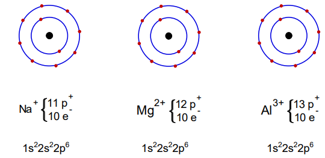

Se clasifică în : proprietăți neperiodice(numărul atomic Z , numărul de masă A) și proprietăți periodice.
Proprietațile elementelor se repetă după un anumit număr Z.
Z crește cu o unitate pentru fiecare element ( de la 1 la 118)
Numărul atomic este o proprietate neperiodică a elementelor care crește de la Z=1(primul element din sistemul periodic) până la ultimul.
Masa atomică a elementelor este o proprietate neperiodică care crește de la primul până la ultimul element din sistemul periodic.
| Proprietăți fizice | Proprietăți chimice | |
|---|---|---|
| Neperiodice | Numărul atomic 1 ≤ Z ≤ 118 |
Nu se cunosc |
| Masa atomică 1,008 ≤ A ≤ 262 |
||
| Periodice | Raza atomică | Caracterul metalic |
| Raza ionică | ||
| Energia de ionizare | Caracterul nemetalic | |
| Electonegativitatea | Valența – N.O. |
Perioadele sunt șirurile orizontale cuprinse între doua gaze rare.
Elementele unei perioade au același numar de straturi.
Ultimul strat completat ne indică perioada din care face parte elementul.
Grupele sunt șirurile verticale din sistemul periodic formate din elemente care au aceeași configurație electronică pe ultimul strat.
Numărul electronilor de pe ultimul strat ne indică grupa din care face parte elementul.
Ultimul electron din configurația electronică se numește electron distinctiv (este electronul pe care îl are in plus un element din sistemul periodic față de precedentul său).
La elementele din grupele principale ,electronul distinctiv se află pe substraturile s sau p.
Ultimul strat completat ne indică perioada din care face parte elementul.
Perioadele se notează cu cifre arabe.
Cifra unităților din numărul grupei principale indică grupa principală și numărul de electroni de pe ultimul strat.
Numărul grupei ne indică valența maximă pe care o poate avea elementul (cu excepția oxigenului și fluorului din grupele principale).
Exemplu:
Z=20 → 1s22s22p63s23p64s2=> Perioada 4 , Grupa II A
Când electronul distinctiv se se află pe un substrat de tip d sau f , elementul face parte dintr-o grupă secundară.
Exemplu:
Z=25 →1s22s22p63s23p64s23d5 => Perioada 4 , Grupa VII B
Dacă electronul distinctiv este pe substratul s , atunci elementul face parte din blocul de elemente s.
Dacă electronul distinctiv este pe substratul p , atunci elementul face parte din blocul de elemente p.
Dacă electronul distinctiv este pe substratul d sau f, atunci elementul face parte din blocul de elemente d.
Raza atomică este jumătate din distanța dintre nucleele a doi atomi identici, vecini.
Raza atomică crește in grupă de sus in jos(cu creșterea numărului de straturi) și scade în perioadă de la stânga la dreapta.
Variația razei în grupă:
Variația razei în perioadă:
Metalele alcaline au cea mai mare rază din perioada respectivă.
Atomii gazelor nobile au o tendință limitată de a se combina cu alți atomi. Stabilitatea lor este datorată configurațiilor electronice de pe ultimul strat, numite configurații stabile de gaz nobil. Acestea sunt de dublet, pe stratul 1 (1s2), configurație întâlnită la atomul de heliu și octet (ns2np6) pe straturile 2, 3, 4, 5, 6, configurație întâlnită la atomii celorlalte gaze nobile.
Atomii celorlalte elemente chimice tind să dobândească aceste configurații stabile pe stratul electronic exterior.
În acest scop, atomii metalelor cedează electroni și formează ioni pozitivi. De exemplu:
Se observă că atomul de sodiu (Na) cedează un electron din orbitalul 3s și formează ionul pozitiv de sodiu (Na+), care are configurație de octet pe ultimul strat.
Ionii pozitivi se mai numesc și cationi. Iar ionii negativi se mai numesc și anioni.
Atomii nemetalelor primesc electroni, pentru atingerea configurației stabile pe ultimul strat și formează ioni negativi (anioni). De exemplu:
Variația razei ionice în grupă:
Raza ionică crește în grupă de sus în jos, cu creșterea numărului de straturi.
Variația razei ionice în perioadă:
Raza ionică crește în perioadă de la dreapta la stânga, odată cu scăderea numărului de protoni din nucleu.
Toți atomii și ionii care au același număr de electroni sunt izoelectronici.
De exemplu, următorii ioni sunt izoelectronici: Na+, Mg2+, Al3+, O2+, F-, deoarece toți au configurație stabilă de 10 electroni. Izolectronic cu acești ioni, este și atomul de neon (Ne), care are Z = 10